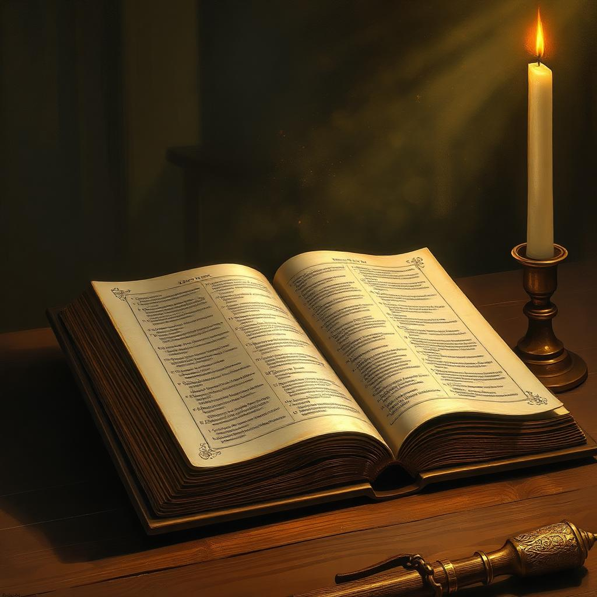

27 livros proféticos
A Bíblia contém 17 livros proféticos no Antigo Testamento (de Isaías a Malaquias) e o Apocalipse no Novo — sem contar trechos proféticos em Gênesis, Salmos, Mateus, etc.
Uma jornada pelas vozes que Deus levantou — dos antigos profetas de Israel ao remanescente dos últimos dias — para guiar Sua Igreja rumo ao Reino Eterno.
Desde o jardim do Éden até as últimas páginas do Apocalipse, Deus jamais Se calou diante da humanidade. Quando o pecado quebrou a comunhão direta entre o Criador e Suas criaturas, Ele escolheu um canal especial para continuar Se revelando: os profetas.
O texto de Amós 3:7 declara com clareza: “Certamente o Senhor Deus não fará coisa alguma, sem ter revelado o seu segredo aos seus servos, os profetas.” Toda mensagem divina destinada a orientar, advertir ou consolar o povo passou por homens e mulheres chamados, inspirados e enviados por Ele.
O profeta não fala de si mesmo. É um mensageiro, uma voz emprestada ao Céu. Por meio dele, Deus revela Seus planos, denuncia o pecado, conforta os aflitos e aponta o caminho da salvação em Cristo Jesus.

Sabendo primeiramente isto: que nenhuma profecia da Escritura é de particular interpretação. Porque a profecia nunca foi produzida por vontade de homem algum, mas os santos homens de Deus falaram inspirados pelo Espírito Santo.· 2 Pedro 1 : 20-21 ·
O apóstolo Paulo declara em Efésios 2:20-21 que a Igreja é “edificada sobre o fundamento dos apóstolos e dos profetas, sendo ele mesmo, Jesus Cristo, a principal pedra da esquina”. Profetas e apóstolos formam, juntos, o alicerce humano da fé cristã — e Cristo, a Pedra Angular, sustenta tudo.
Conduziu Israel do Egito e recebeu a Lei no Sinai.
Anunciou o Messias sofredor sete séculos antes.
Chamou Judá ao arrependimento até o cativeiro.
Recebeu as profecias dos reinos e do tempo do fim.
Profetizou ao Israel exilado, vendo a glória de Deus.
Restaurador da adoração verdadeira em Israel.
Preparou o caminho do Senhor no deserto da Judeia.
Pregou em Pentecostes e abriu a porta aos gentios.
Levou o Evangelho ao mundo greco-romano.
Recebeu, em Patmos, a profecia do Apocalipse.
Paulo declara em 1 Coríntios 14:4 que “o que profetiza edifica a igreja”. O dom não é dado para satisfazer curiosidade humana, mas para edificar, exortar e consolar o povo de Deus (1 Co 14:3).
De forma prática, o dom de profecia:
· Edifica a fé, fortalecendo os crentes na verdade bíblica;
· Exorta à santidade, à obediência e ao arrependimento;
· Consola os corações em meio às provas e perseguições;
· Orienta a Igreja em decisões, missão e doutrina;
· Aponta sempre para Cristo, o centro de toda profecia (Ap 19:10).
Assim como uma bússola não cria o norte, mas o indica, o profeta não inventa a verdade — apenas aponta o caminho que o Senhor já traçou.
Em Apocalipse 12:17, João vê o dragão enfurecido contra “o resto da sua descendência, os que guardam os mandamentos de Deus e têm o testemunho de Jesus Cristo”. E em Apocalipse 19:10 o anjo explica: “o testemunho de Jesus é o espírito de profecia”.
A Igreja remanescente guarda todos os Dez Mandamentos — inclusive o sábado, o quarto mandamento, sinal do Deus Criador.
Esse mesmo povo manifesta o dom de profecia como evidência da presença viva do Espírito Santo entre eles.
A Bíblia adverte: “Muitos falsos profetas se levantarão” (Mt 24:11). Por isso, Deus nos deu testes claros para distinguir o verdadeiro do falso. Estas são as marcas reveladas em Isaías 8:20, Mateus 7:16-20 e Gálatas 5:19-23:
Isaías 8:20 — “À lei e ao testemunho! Se eles não falarem segundo esta palavra, é porque não há luz neles.” Toda mensagem profética é coerente com toda a Escritura.
Jeremias 28:9 — Quando o profeta anuncia o futuro, suas palavras devem se cumprir, a menos que sejam condicionais ao arrependimento.
Apocalipse 19:10 — O profeta verdadeiro não atrai pessoas para si, mas conduz todos a Cristo, o único Salvador.
Mateus 7:16-20 — “Pelos seus frutos os conhecereis.” Sua vida produz amor, alegria, paz, fidelidade — o fruto do Espírito (Gl 5:22-23).
1 João 4:1-3 — Reconhece que Jesus veio em carne, é o Filho de Deus e o único caminho de salvação.
Em visão, o profeta verdadeiro não respira (Dn 10:17), recebe força sobrenatural e seus olhos permanecem abertos (Nm 24:4), conforme registrado nas Escrituras.
Os adventistas do sétimo dia creem que o dom de profecia, prometido para o povo remanescente, manifestou-se de forma especial no ministério de Ellen Gould White (1827-1915). Suas mensagens, escritas durante 70 anos, sempre apontam para a Bíblia como a regra suprema de fé e prática.
Seus escritos — devocionais, históricos, educacionais e de saúde — foram traduzidos para mais idiomas que os de qualquer outro autor não-bíblico, e passaram por todos os testes bíblicos do verdadeiro profeta: harmonia com as Escrituras, exaltação de Cristo, frutos santos e cumprimento das predições.
“A luz menor foi dada para guiar homens e mulheres à luz maior.” — E.G.W.
“Sabendo primeiramente isto: que nenhuma profecia da Escritura é de particular interpretação. Porque a profecia nunca foi produzida por vontade de homem algum, mas os santos homens de Deus falaram inspirados pelo Espírito Santo.”— Decore este texto e leve-o no coração —
No vale de Berachá, antes da batalha, o rei Josafá clamou ao povo: “Crede no Senhor vosso Deus, e estareis seguros; crede nos seus profetas, e prosperareis” — 2 Crônicas 20:20. Esta é a promessa eterna para todos que confiam na palavra profética:
Quem crê em Deus encontra firmeza interior diante das tempestades da vida e dos enganos dos últimos dias.
Confiar nos profetas conduz a um crescimento sólido no conhecimento de Cristo e na santificação.
A palavra profética é “lâmpada que ilumina em lugar escuro” (2 Pe 1:19), guiando passos e decisões.
Em tempos de falsos cristos e milagres mentirosos (Mt 24:24), a profecia mantém o crente na verdade.
As profecias revelam o desfecho glorioso: a volta de Jesus e a restauração de todas as coisas.
O dom edifica, conserva e une o corpo de Cristo em uma só fé e esperança (Ef 4:11-13).
Pequenos tesouros do conhecimento profético que vale a pena guardar.
A Bíblia contém 17 livros proféticos no Antigo Testamento (de Isaías a Malaquias) e o Apocalipse no Novo — sem contar trechos proféticos em Gênesis, Salmos, Mateus, etc.
Miriã, Débora, Hulda, Ana e as quatro filhas de Filipe (At 21:9) também receberam o dom — mostrando que Deus chama homens e mulheres igualmente.
A grande estátua representa Babilônia, Medo-Pérsia, Grécia e Roma, seguida pelos reinos divididos da Europa, até a pedra (Cristo) destruir tudo e estabelecer o Reino Eterno.
De Gênesis a Apocalipse, toda profecia genuína aponta para Jesus — Sua morte, ressurreição, ministério celestial e Segunda Vinda.
O dom de profecia é uma das manifestações do Espírito Santo (1 Co 12:10) e permanecerá até a volta de Jesus (1 Co 1:7).
“As Escrituras testificam que um dos dons do Espírito Santo é a profecia. Este dom é uma marca identificadora da igreja remanescente, e cremos que se manifestou no ministério de Ellen G. White.”